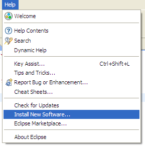
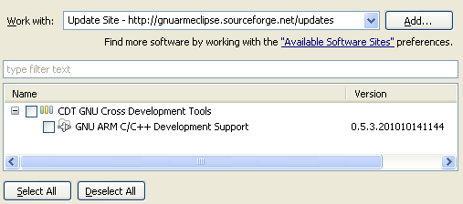
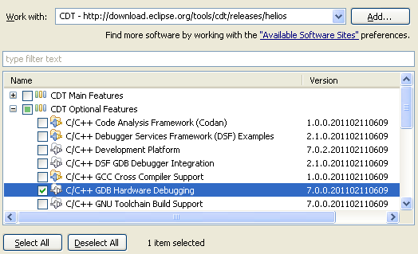
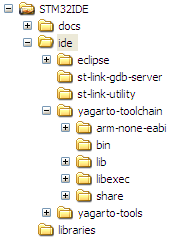
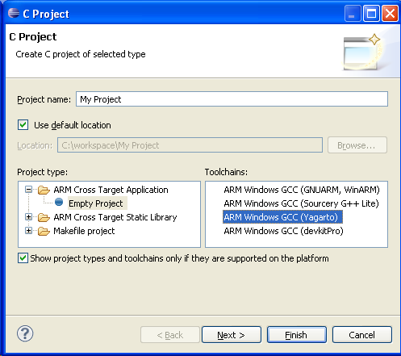
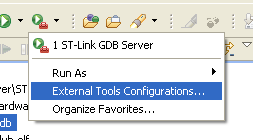
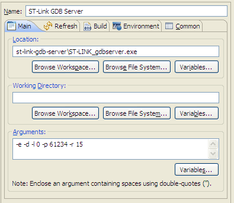
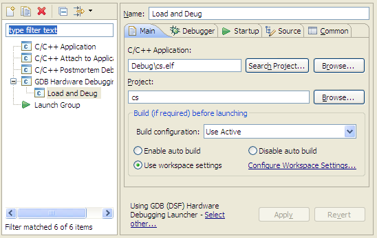

STM32 IDE HowTo
Pre Requirements
- Install the Java JRE (http://www.java.com/download/)
- Get Eclipse Helios (http://www.eclipse.org/downloads/)
- Get the Yagarto toolchain (http://www.yagarto.de/)
Set up GNU ARM Eclipse Plug-in
Needed to get a nice interface for setting the CPU type, compiler and linker options etc.
Help -> Install New Software
Add -> Location: http://gnuarmeclipse.sourceforge.net/updates
In case it's slow, untick "Check All Servers".
Set up Hardware Debugging
Help -> Install New Software
Add -> http://download.eclipse.org/tools/cdt/releases/helios
Select C/C++ GDB Hardware Debugging
Set up the Toolchain
First the toolchain needs to be added to the current path. In this case the following folder structure was choosen:
The following code in a bat file adds the toolchain to the path and starts Eclipse independed of the current path:
set PATH=%PATH%;%CD%\ide\yagarto-toolchain\bin;%CD%\ide\yagarto-tools\bin ide\eclipse\eclipse.exe
Set up a new Project
File -> New -> Project
ARM Cross Target Application -> Empty Project -> Yagarto
Now we need to set up GDB debugging.
Switch Elcipse to Debug mode, first the server.
Run -> External Tools -> External Tools Configuration or click on the toolbar button shown below.
Location needs to be the ST-Link GDB server taken from Atollic. It's a modified GDB Server that includes a driver for ST-Link.
Arguments (taken from Atollic as well): -e -d -l 31 -p 61234 -v -r 15
This could be started without Eclipse, but this way it is a one click operation and Eclipse will watch the process, show debug output and notify in case the process crashes.
Now the client. Run -> Debug Configurations... or the button shown below.

Add a new GDB Hardware Debugging entry and switch to Debugger.
GDB Command needs to be the toolchains gdb executable. In this case it's arm-none-eabi-gdb.exe since yagarto is in the current path.
